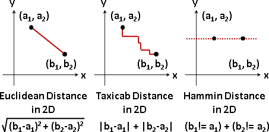
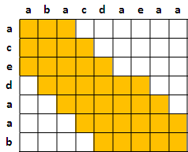
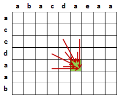
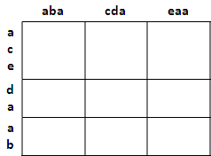

Metric
程度★ 難度★
距離（Distance）
現實問題，考慮兩個東西有多相似；化為數學問題，就是考慮兩個東西的距離有多接近。
兩個數值的距離：用減法、絕對值計算距離。 兩個向量的距離：用數學公式計算距離。 兩串數列的距離：用Dynamic Time Warping計算距離。 兩串字串的距離：字串類似數列，同上。 兩串訊號的距離：以「Linear Predictive Coding」重新表示訊號， 或者以「Fourier Transform」重新表示訊號， 再用數學公式計算距離。 兩棵樹的距離：用相關演算法計算距離。 關鍵字是Tree Edit Distance。 兩張圖的距離：不要問，很恐怖。
距離函數（Metric）
距離這個詞在數學中是有嚴謹定義的：
一、兩個一樣的東西，距離等於零，d(A,A) = 0。 二、A到B的距離等於B到A的距離，d(A,B) = d(B,A)。 三、三角不等式，ABC三個東西，兩邊和皆大於等於第三邊， d(A,B) + d(B,C) ≥ d(A,C)。
常見的距離函數：
Euclidean Distance（L2）：直線距離。 Taxicab Distance（L1）：垂直、水平移動的距離。 Hamming Distance：相對應維度，數值相異的維度個數。
UVa 10508 11085 ICPC 5132
長度函數、絕對值函數（Norm）
長度這個詞在數學中是有嚴謹定義的：
一、有些東西長度為零，p(A) = 0。 二、一個東西均勻放大縮小，其長度也隨著放大縮小，p(k*A) = |k|*p(A)。 三、三角不等式，p(A + B) ≤ p(A) + p(B)。
下面其實用不到長度函數，只是順便介紹。:p
Dynamic Time Warping
程度★★ 難度★
Dynamic Time Warping
用途是比對兩個字串（數列）的相似程度（距離）。
其實就是「Longest Common Subsequence: Dynamic Programming」，唯一的差別就是DTW可以自行設定比對成功、比對失敗分別要加多少數值，不一定是一和零。
各位可以讓DTW的計算結果是一個距離函數，就能客觀地衡量多個物品之間的差異程度，而不會導致AB很像、BC很像，結果AC完全不像的情況。
特殊技巧
如果想要均勻比對，可以自行設定表格計算範圍，甚至可以設定只算i與j很接近的格子、格子內數值太大太小就不算之類的。順便加快計算速度，變成線性時間。
如果只取鄰近格子滿足不了你，可以一次多取幾格，把遞迴公式弄複雜。
如果覺得比對字元實在太瑣碎，可以把字串重新分成一段一段，以段作為單位進行比對。表格中的每個大格子都可以自己再做一次DTW，變成兩層DTW。
因為DTW發明很久了，所以方法天馬行空、什麼都有。網路上可以找到一堆。
字串的Edit Distance
一個字串（數列），新增、刪除、修改一個字元算做一步，請問需要幾步才能改成另一個已知字串（數列）？
這個問題一樣可以用LCS、DTW的概念來解決。這裡定義的「步」也是一種距離函數；當然啦，實際運用時，各種操作不一定要剛好都是一。
UVa 164 526 10739 12351
樹的Edit Distance
樹沒有環，很容易設計多項式時間演算法，於是也有人把樹拿來算個Edit Distance。
網路上資料很多，這裡就不介紹了。